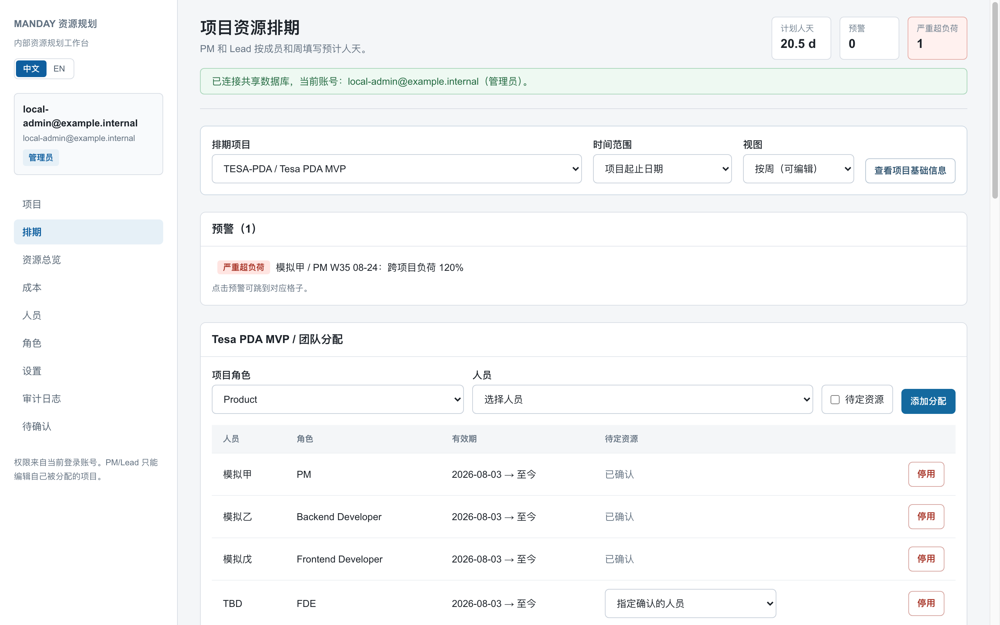
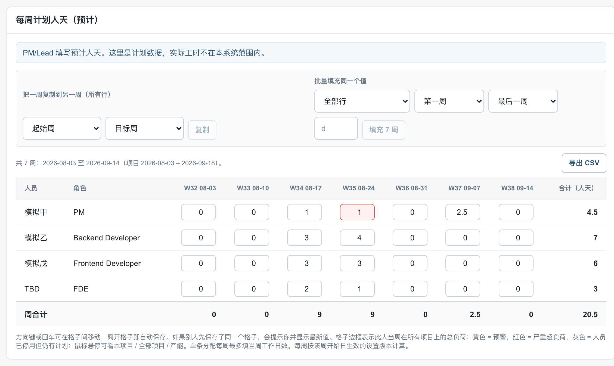
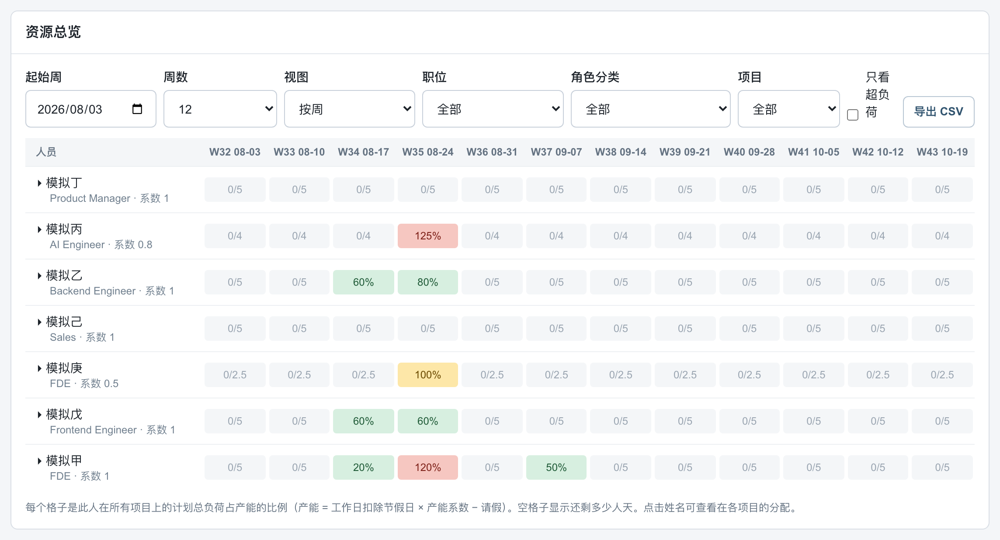
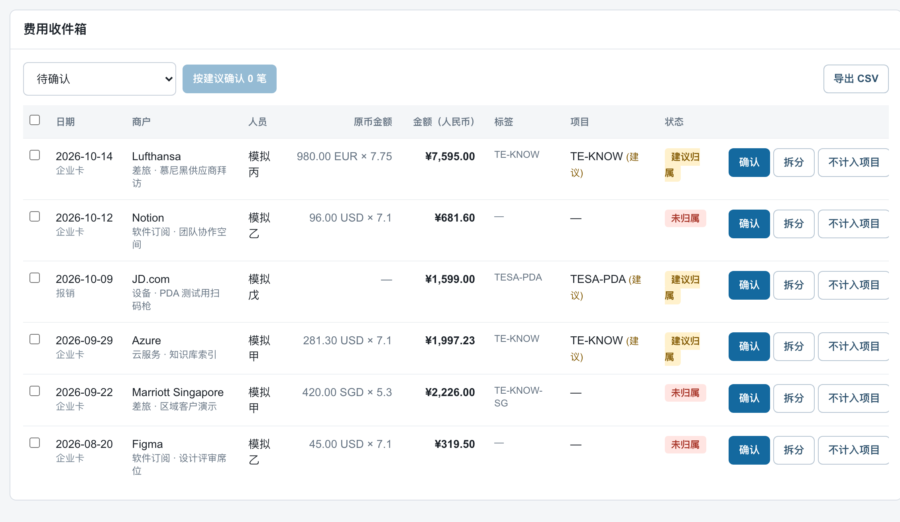
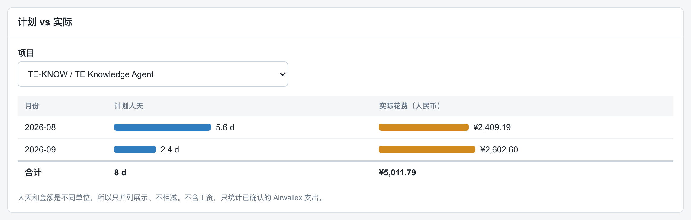
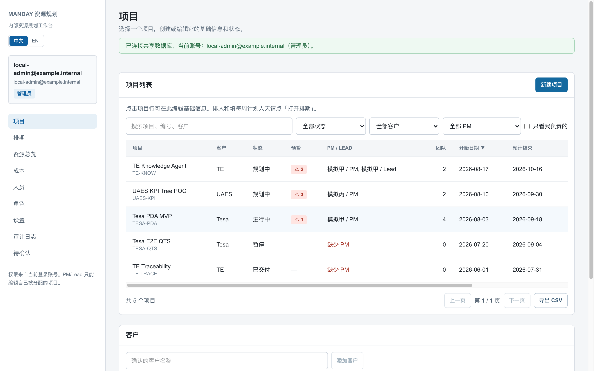

一个给项目型团队用的内部工具：谁在哪个项目上、每周排了几个人天、谁已经超负荷、项目实际花了多少钱，放在同一套数据里回答。
公司 COO 希望有一个工具，把项目排期、人员负荷和项目成本统一管起来，交给我从零负责落地。拿到的需求可以归结为三点：
每个项目各自记录排了谁、排了多少天，但一个人往往同时在几个项目上，他每周加起来忙不忙，只能人工拼起来算。历史表格里的人名、客户名写法不统一，合并时容易弄错。项目实际花了多少钱，又在另一个系统（Airwallex）里。ManDay 把这些收进一套共享数据：每个项目每周排多少人天只填一次，跨项目负荷、月度汇总和成本对比都从这一份数据算出来。
没定 PM 的项目先存为草稿；进入规划前系统要求必须有 PM。
按人和周填预计人天，格子边框直接显示这个人在所有项目上的总负荷。
热力图里一眼看到谁空、谁超负荷，点开名字看他被哪些项目占用。
企业卡和报销按标签自动建议归属，人确认或拆分后才计入项目成本。

打开一个项目，先看到它有哪些风险：这里模拟甲在 W35 被几个项目叠加排到 120%。点击预警直接跳到对应格子。资格不符的人也能分配，但会被标出来，避免规则太死排不了人。

像表格一样用方向键移动、离开格子即保存；可以把一周复制到另一周，或给一段时间批量填同一个值。两个人同时改同一格时，后保存的人会收到提示并看到最新值，不会悄悄覆盖。

产能不是固定的 5 天：节假日会扣掉当周工作日，兼职按系数折算，请假再从中减去。所以 W35 同样排 2.5 天，对系数 0.5 的人就是 100%。

外币按交易日汇率换算成人民币并留存汇率。有标签的交易给出「建议归属」，没映射的标红等人处理。

人天和金额单位不同，只并列、不相减。只统计已确认的支出，不含工资。

预警数、团队人数、本月人天都能排序；可按客户、按 PM、「只看我负责的」筛选，导出 CSV 给不用系统的人。
系统权限只有管理员、销售、成员三种；某人能不能改某个项目的排期，取决于他在这个项目里是不是 PM 或 Lead。为什么：同一个人可能在 A 项目当 PM、在 B 项目只是开发，全局「PM 权限」会越权。
填到 120% 不会被拦下，而是变红并进预警列表。为什么：现实中短期超排很常见，硬拦会让人绕开系统回到表格；看得见比拦得住更有用。
改「每人天 8 小时」或预警阈值时，新建一个从某天起生效的版本。为什么：历史周必须按当时的规则计算，否则改一个参数，过去的报表全变了。
缩写、错字、相近写法一律不自动合并，由管理员逐条对应或新建。为什么：把两个不同的人合并成一个，比多一条待处理记录代价大得多。
Airwallex 的标签只决定「建议归属」；一笔费用可以拆到多个项目，拆分合计必须等于原金额。为什么：标签经常打错或漏打，成本报表的可信度来自确认这一步。
人员、角色、客户都只能停用；审计日志记录谁在什么时候把什么从多少改成了多少。为什么：排期和成本会被拿去对账，任何一个数字都要能追溯回去。
把项目和排期的基本流程做成可以点的页面。
接入共享数据库和登录，按账号区分权限。
逐页核查后修了 12 个问题：排期只显示 4 周、审计看不懂、缺草稿状态、没有节假日等。
权限矩阵逐条落实；加入热力图、批量填充、冲突提示、请假。
界面和提示全部双语；Airwallex 成本模块用演示数据跑通全流程。